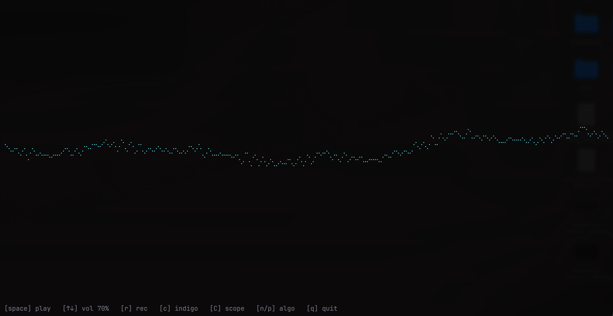

termus
Terminal music, generated from scratch.

What it is
termus is a CLI music player that algorithmically generates ambient, jazz, lo-fi, classical, drone, bells, lullaby, and phase music in real time — no tracks, no samples on disk, no playlist files. Every second of audio is synthesized or rendered through a SoundFont on the fly. Run it in your terminal, hit space, and it produces music that never repeats and can keep going for hours.
The interface is a colored Braille oscilloscope tracking the synthesizer's own output — no UI chrome, no album art, no notifications.
Install
Homebrew (macOS / Linux):
brew tap mrbrutti/termus
brew install termus
termusOr from source:
go install github.com/mrbrutti/termus/cmd/termus@latest
termus
First run with a SoundFont-based algorithm auto-downloads a SoundFont
into your OS cache (~/Library/Caches/termus/ on macOS).
12 SoundFonts are available — the default general (32 MB)
covers all genres reasonably; specialized presets (Tyros 4 for jazz,
Fairy Tale Bank for bells, Timbres of Heaven for classical) unlock the
best per-genre sound via --sf2-strategy=optimal.
Genres
ambient | Eno-style — chord drift, tape-loop bells, choir over pads |
drone | Stars of the Lid — quartal swells, bowed glass, sub-bass pedal |
bells | Boards of Canada — pentatonic bells in I-IV-I-V |
lullaby | Brahms Wiegenlied — 3/4 music box at 72-84 BPM |
classical | Mozart/Haydn — Alberti bass, antecedent + consequent periods |
phase | Reich Piano Phase — two voices drift, 12-note pattern |
lofi | J Dilla — boom-bap with snare 30 ms late, Rhodes EP, walking bass |
jazz | Bill Evans — rootless 3-5-7-9 voicings, walking bass, swing ride |
Controls
| space | play / pause |
| ↑ ↓ | volume |
| r | record to WAV |
| c | cycle color theme |
| C | cycle visualization (scope / spectrum / bars / mirror) |
| n p | next / previous algorithm |
| s | skip playlist track |
| q | quit |